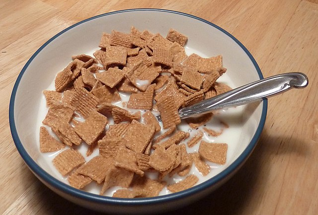
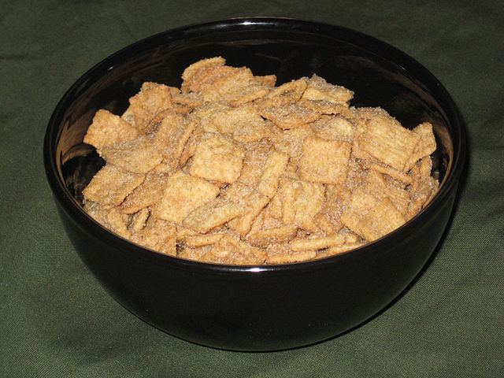
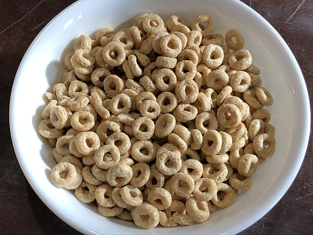

Why Milk Comes Before Cereal
(Except for Honey Nut Cheerios and Cinnamon Toast Crunch)

mroach - Wikimedia Commons - Creative Commons Attribution-Share Alike 2.0
There are many reasons why milk should come before cereal, except for Honey Nut Cheerios and Cinnamon Toast Crunch
But why does this matter in the first place?
Improving the cereal experience, especially during breakfast, leads to improved productivity and happiness throughout the day
Alright. Now tell me why!

Bryanwake - Wikimedia Commons - Public Domain
- Cereal Gets Soggy
- Soggy cereal is comparable to mush & baby food, which decreases crunchiness and therefore decreases food enjoyment such as crunchy fries versus soggy fries
- The exception to this is Cinnamon Toast Crunch and Honey Nut Cheerios because they make the milk taste good like mixing milk and chocolate powder. Other cereals do not do this. Then you can drink the milk; the best thing about cereal.

Famartin - Wikimedia Commons - Creative Commons Attribution-Share Alike 4.0
- Pouring milk on cereal (as you do by putting cereal before milk) has the risk of splashing milk everywhere
- You will be in fear of accidently splashing milk everywhere, preventing you from drinking that delicious milk and making you clean it up
- You will spend more on new milk every time you spill it. It may not seem like much one or two times, but the amount of milk you will waste adds up quickly